Configurações de Produção - Aba Geral
Para acessar as Configurações de produção é necessário ir no menu:
Administração -> Definição -> Produção -> Configurações de produção
Na Aba Geral da tela de configurações de produção é realizado a configuração para utilização do módulo de produção.
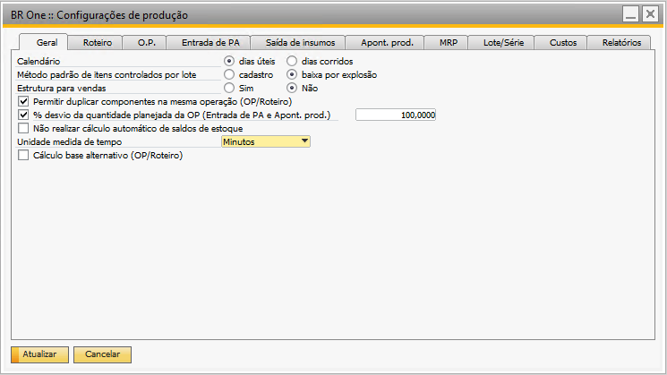{kind=link}
Calendário
{kind=link}
Essa configuração determinará se a produção será baseada apenas nos dias úteis ou se serão considerados os dias corridos.
Método padrão de itens controlados por lote
{kind=link}
Se a configuração estiver definida como “Cadastro”, ao inserir um componente nas linhas de um roteiro ou ordem de produção (OP), o valor da coluna “Método de baixa” será preenchido com o valor fornecido do Cadastro de item.
Cadastro do item > Aba Dados de produção
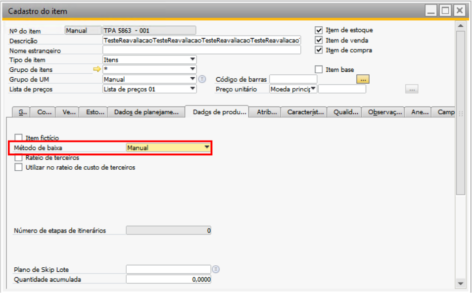 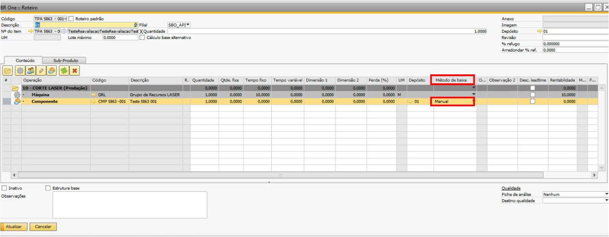{kind=link}
{kind=link}
Se a configuração estiver definida como “Baixa por explosão”, independentemente de como estiver configurada no cadastro do item “Manual”, ao inserir um componente nas linhas de um roteiro ou ordem de produção (OP), o valor “Baixa por explosão” será preenchido na coluna “Método de baixa”.
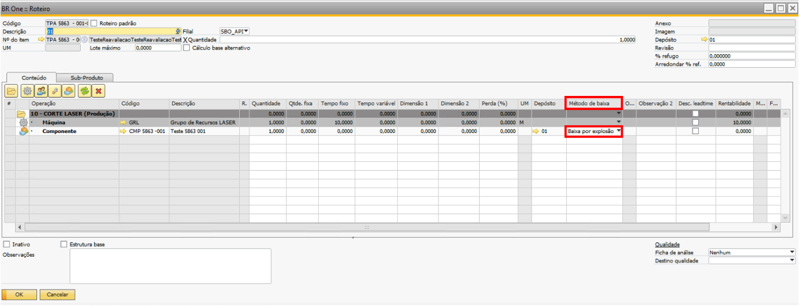{kind=link}
Estrutura para vendas: E separar Estrutura para vendas de apontamento de horas.
{kind=link}
Se o parâmetro estiver marcado como “Sim”, será habilitada a tela Estrutura de produtos (SAP) e os relatórios Estrutura de produtos (SAP) e Relatório do ciclo de produção.
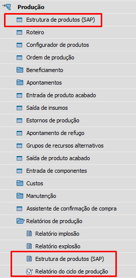{kind=link}
Se o parâmetro estiver marcado como “Não”, a tela Estrutura de produtos (SAP) e o relatório Estrutura de produtos (SAP) não aparecerão. O Relatório do ciclo de produção continuará aparecendo no menu, porém, o acesso à tela será bloqueado. Caso o usuário tente acessar a tela, a seguinte mensagem de erro será exibida:

BR One :: Acesso ao “Relatório do ciclo de produção” não é permitido quando “Estrutura para vendas” estiver selecionado como “Não”.
Na tela “Lista de itens em aberto”, quando selecionada a opção “Ordens de produção” no campo “Documentos em aberto”, uma caixa de mensagem será exibida para informar ao usuário que apenas as ordens de produção nativas do SAP serão carregadas e para o módulo de produção, deve ser utilizado relatório alternativo do BR One Produção.
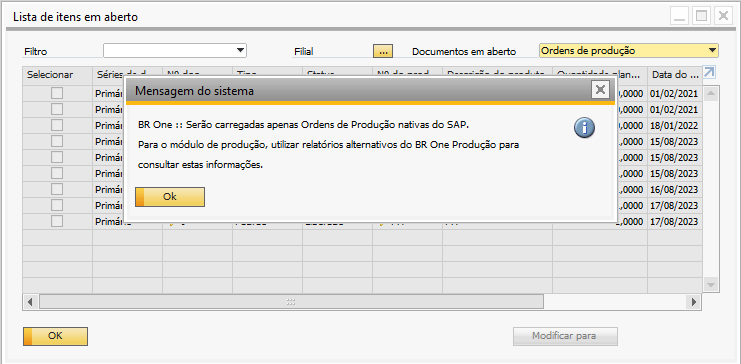{kind=link}
BR One :: Serão carregadas apenas Ordens de Produção nativas do SAP. Para o módulo de produção, utilizar relatórios alternativos do BR One Produção para consultar estas informações.
Ao abrir a tela Estrutura de produtos (SAP), será possível gerar estrutura do tipo “Montagem, Vendas e Modelo”.
Se tentar adicionar uma estrutura com o campo “Tipo de estrutura de produtos” com o valor “Produção”, a seguinte mensagem de erro será exibida:

BR One :: Não é permitido usar este tipo de estrutura de produtos, para estruturas do tipo produção deverá ser usado o menu “Roteiro”.
Se preencher os campos e clicar em fechar, será apresentada a tela perguntando se o mesmo deseja gravar as modificações. Caso seja clicado em “Sim” e o campo “Tipo de estrutura de produtos” estiver com o valor “Produção”, as seguintes mensagens de erros serão exibidas:

BR One :: Não é permitido usar este tipo de estrutura de produtos, para estruturas do tipo produção deverá ser usado o menu “Roteiro”.
Se tentar atualizar uma estrutura com o campo “Tipo de estrutura de produtos” com o valor “Produção”, a seguinte mensagem de erro será exibida:
{kind=link}
BR One :: Não é permitido usar este tipo de estrutura de produtos, remova esta estrutura do tipo ”Produção” pois poderá causar conflitos e realizar o cadastro através do menu “Roteiro”.
Se alterar os dados de uma estrutura e clicar em fechar, será apresentada a tela perguntando se o mesmo deseja gravar modificações. Caso seja clicado em “Sim” e o campo “Tipo de estrutura de produtos” estiver com o valor “Produção”, as seguintes mensagens de erros serão exibidas:
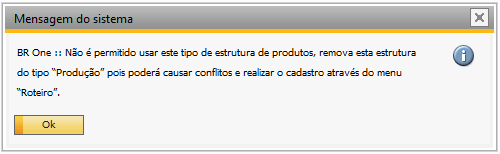{kind=link}
BR One :: Não é permitido usar este tipo de estrutura de produtos ,remova esta estrutura do tipo “Produção” pois poderá causar conflitos e realizar o cadastro através do menu “Roteiro”.
Se o campo “Tipo de estrutura de produtos” estiver com qualquer outro valor que não seja “Produção”, ao tentar selecionar “Produção”, a seguinte mensagem de alerta será apresentada:

BR One :: Não é permitido usar este tipo de estrutura de produtos, para estruturas do tipo produção deverá ser usado o menu “Roteiro”.
Permitir duplicar componentes na mesma operação (OP/Roteiro)
{kind=link}
Quando o parâmetro estiver marcado, será permitido adicionar componentes idênticos tanto no Roteiro quanto na Ordem de Produção (OP). Por padrão, esse parâmetro vem desmarcado.
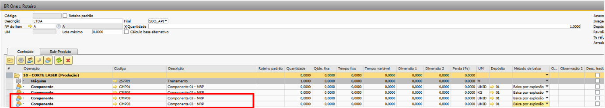{kind=link}
Caso o parâmetro esteja desmarcado, a seguinte mensagem será exibida:
{kind=link}
BR One :: Grupo já existente e não pode ser duplicado.
% desvio da quantidade planejada da OP (Entrada de PA e Apont. prod.)
{kind=link}
Esse parâmetro define se a quantidade apontada será validada de acordo com a quantidade planejada da OP.
Caso o parâmetro esteja marcado, é possível configurar uma porcentagem de desvio a ser permitida durante a validação.
O campo define a porcentagem da quantidade que poderá ser apontada a mais nas telas de apontamento, em relação à quantidade planejada da OP.
Essa configuração afeta as telas de “Apontamento de produção”, “Parar produção” e “Entrada de PA”.
Como exemplo, será utilizado a tela de “Entrada de PA”, mas a regra é a mesma para todas as telas citadas.
Ordem de produção (OP) com quantidade planejada de 10.
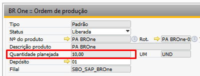{kind=link}
{kind=link}
Com o parâmetro marcado e com valor 0 no campo. Ao realizar entrada de produto acabado acima da quantidade planejada (10), a seguinte validação ocorrerá:
{kind=link}
BR One :: Quantidade apontada não pode ser superior que a quantidade planejada: 10. Desvio permitido de 0%. Total permitido: 10. Total apontado: 11,000000.
Se o desvio estiver configurado para 20%, será possível realizar o apontamento de até 2 quantidades a mais da planejada, ou seja, será possível apontar até 12 quantidades.
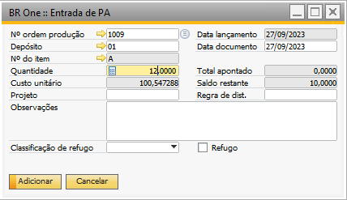{kind=link}
E o sistema irá concluir o apontamento.
{kind=link}
BR One :: Operação realizada com sucesso.
Não realizar cálculo automático de saldos de estoque
{kind=link}
Com esse parâmetro desmarcado, o cálculo automático do saldo dos estoques será feito automaticamente na aba “Estoque” do cadastro do item.

Se o parâmetro estiver marcado, o cálculo do saldo dos estoques não será calculado automaticamente.

Porém, os cálculos podem ser vistos na opção “Status do inventário” ao clique do botão direito no formulário. No relatório é exibida uma linha para cada depósito e seus respectivos saldos e ao final, a soma das linhas. Os depósitos que forem de Envio Direto não aparecerão na tela.
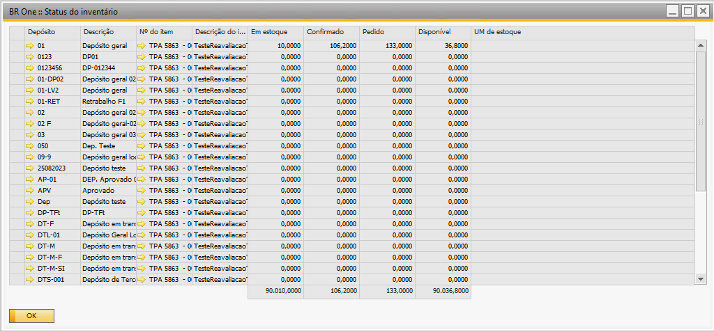{kind=link}
Unidade medida de tempo
A unidade de medida de tempo determina se o cálculo das datas da Ordem de produção (OP), recomendação do MRP ou relatório de apontamento de produção serão feitos em Segundos, Minutos ou Horas.
Obs.: Para garantir o correto funcionamento do parâmetro, é necessário que o item de produção esteja configurado com o leadtime preferencial “Sequência de operações” em seu cadastro. Essa opção esta localizada Cadastro do item > Aba Dados de planejamento > Campo Leadtime preferencial

Exemplo de cálculo de data de OP:
Considerando um calendário de segunda a sexta a 8 horas de trabalho por dia e a data de vencimento 10/08/2023, o cálculo das datas será feito da seguinte forma:
Segundos
36000 segundos = 600 minutos = 10 horas = (10 horas / 8 horas por dia) = 1 dia e 1 quarto
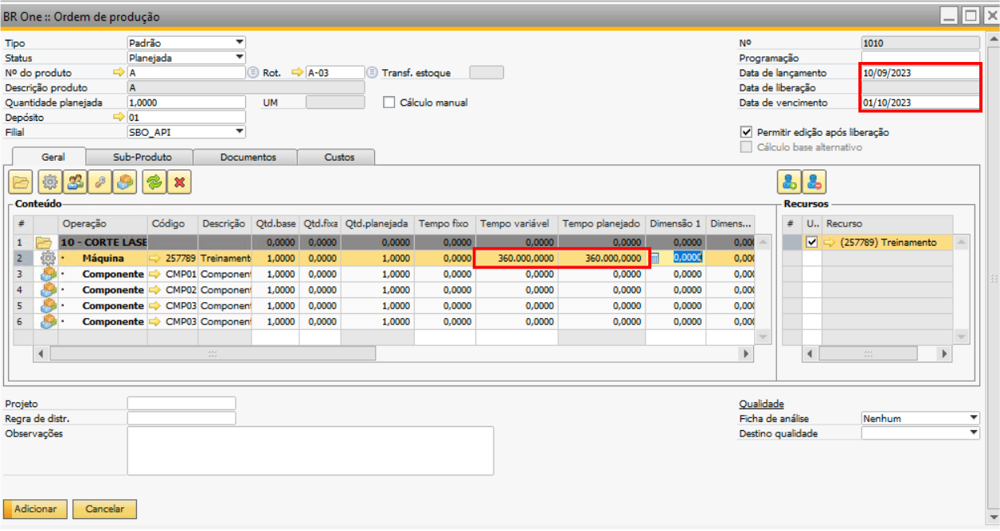{kind=link}
Minutos
7200 minutos = 120 horas = (120 horas / 8 horas por dia) = 15 dias
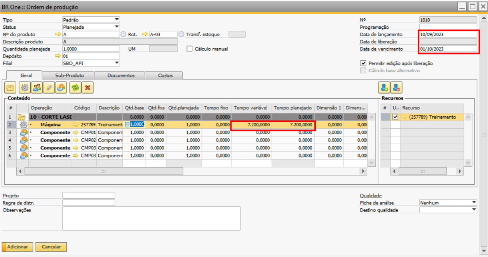{kind=link}
Horas
24 horas = (24 horas / 8 horas por dia) = 3 dias
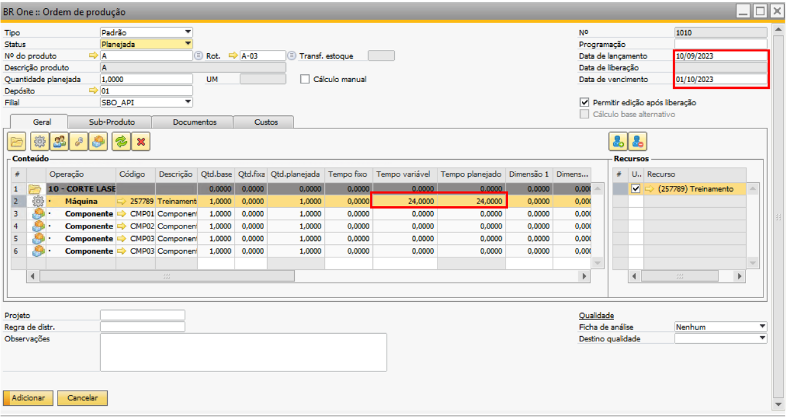{kind=link}
Exemplo de Relatório de apontamento:
Para a OP demonstrada acima, foi feito apontamento de 24 horas de produção
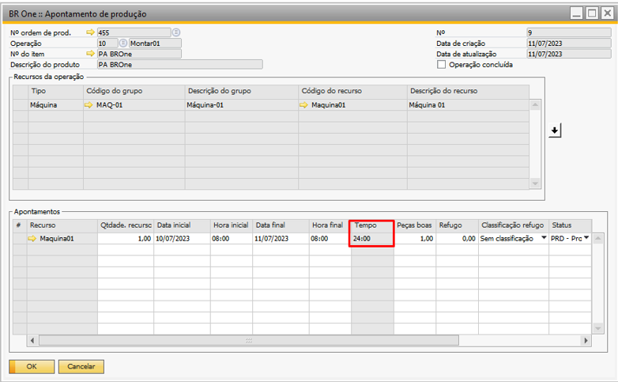{kind=link}
Segundos
24 horas = 24 * 60 * 60 = 86.400 segundos
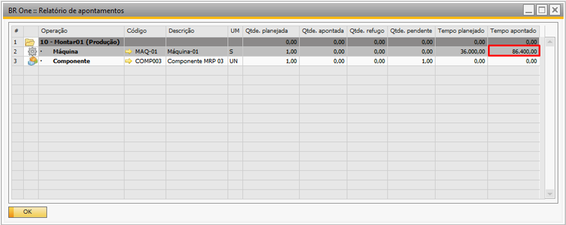{kind=link}
Minutos
24 horas = 24 * 60 = 1440 minutos
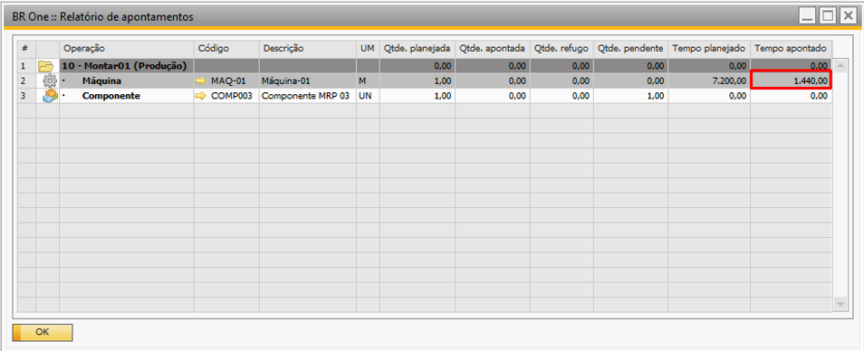{kind=link}
Horas
24 horas
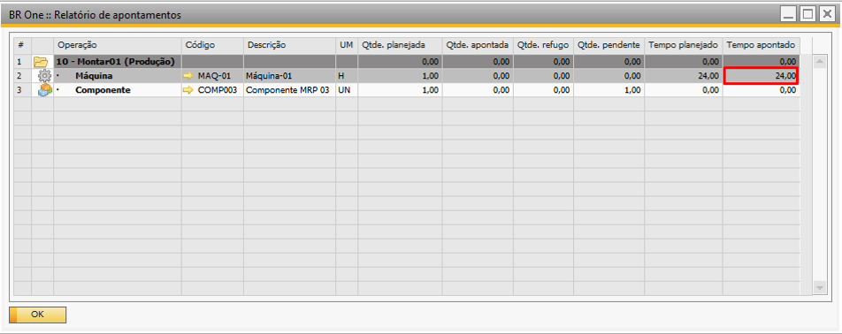{kind=link}
Cálculo base alternativo (Roteiro/OP)
Quando esse parâmetro estiver marcado, o BR One irá realizar os cálculos das quantidades e tempos das linhas das Ordens de produção (OP’s) de maneira alternativa. Esta configuração é útil para cálculos de quantidades muito pequenas. Habilitando esse parâmetro, por padrão ao criar um roteiro, trará a flag do cabeçalho do roteiro “Cálculo base alternativo” marcada.

Na criação de uma Ordem de produção (OP), a flag será copiado do “Roteiro”.
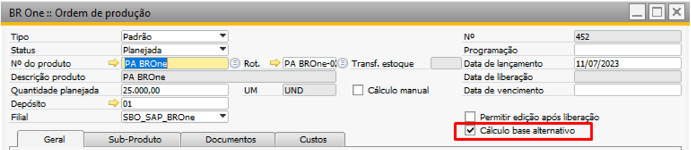{kind=link}
Com esta flag marcada na Ordem de produção (OP), a “Quantidade planejada” do cabeçalho da Ordem de produção (OP) será copiada da quantidade do “Roteiro”.
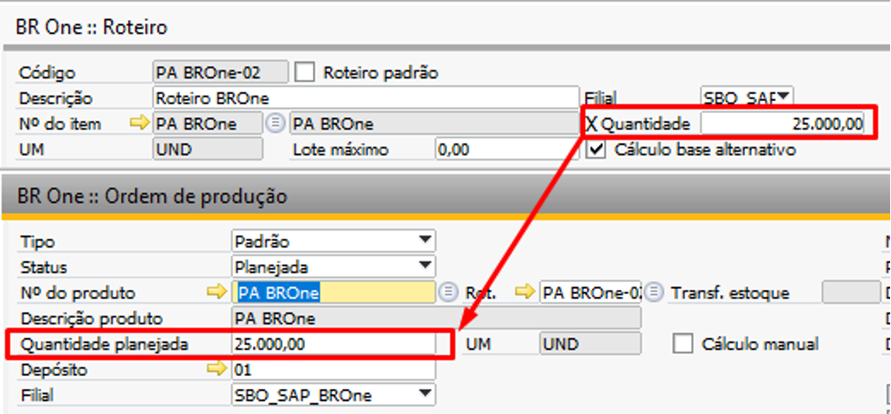{kind=link}
As quantidades bases das linhas da Ordem de produção (OP) serão copiadas das quantidades das linhas do “Roteiro”. Os tempos variáveis das linhas da Ordem de produção (OP) serão copiados dos tempos variáveis das linhas do “Roteiro”.
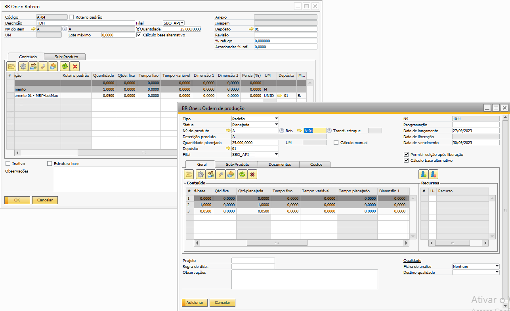{kind=link}
O cálculo será realizado baseado na quantidade do cabeçalho do roteiro. No exemplo acima, temos os seguintes dados:
Quantidade “Roteiro” (cabeçalho): 25.000,00
Quantidade planejada “Ordem de produção” (cabeçalho): 25.000,00
Quantidade base: 0,05 (linha)
Será feita a seguinte conta:
[Quantidade base] / [Quantidade roteiro] * [Quantidade planejada (OP)]
0,05 / 25.000 * 25.000 = 0,05
Fazendo o mesmo exemplo com outra quantidade planejada:
[Quantidade base] / [Quantidade roteiro] * [Quantidade planejada (OP)]
0,05 / 25.000 * 50.000 = 0,10
As mesmas regras se aplicam para os tempos, onde o cálculo seria:
[Tempo variável] / [Quantidade roteiro] * [Quantidade planejada (OP)]
8,00 / 25.000,00 * 25.000,00 = 8,00
Fazendo o mesmo exemplo com outra quantidade planejada:
[Tempo variável] / [Quantidade roteiro] * [Quantidade planejada (OP)]
8,00 / 25.000,00 * 50.000,00 = 16,00